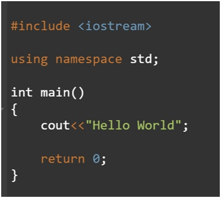

Introduction to C++ Programming Language
Learn and study with us
C++
C++ is a general-purpose programming language and widely used nowadays for competitive programming. It has imperative, object-oriented and generic programming features. C++ runs on lots of platform like Windows, Linux, Unix, Mac etc.

C++ is an efficient and powerful language and finds wide use in various GUI platforms> , 3D graphics and real-time simulations. Because of the inclusion of rich function libraries, working in C++ becomes simpler and convenient than C. Being object-oriented programming like Java>, C++ provides the support of inheritance, polymorphism, encapsulation, etc.
Unlike C, C++ allows exception handling and function overloading. Bringing in the important topics under one roof, this tutorial to C++ is a very efficient and convenient way to learn C++ from scratch.
Most used programming languages among developers worldwide, as of early 2020.
| Languages |
Share of Respondents |
| Python |
44.1% |
| Java |
40.2% |
| C++ |
23.9% |
w3schools
Setting up the Environment
After gaining a brief introduction on C++, the next step is to know how to get the most out of this language by implementing various programs in it. C++ runs on lots of platform like Windows, Linux, Unix, Mac, etc. Before we start programming with C++>. We will need an environment> to be set-up on our local computer to compile and run our C++ programs successfully. If you do not want to set up a local environment you can also use online IDEs for compiling your program.

environment
Basics in C++
So after setting up the language>, let’s begin to harness the basics and build a conceptual framework on how to write the programs and various provisions the language has to provide to the geeks. In this article, we would start right from writing our first C++ program to learning Input/Output, Operators, Variables, Loops etc.

basics
Arrays in C++
An array is collection of items stored at contiguous memory locations. We can use normal variables (v1, v2, v3, ..) when we have a small number of objects, but if we want to store a large number of instances, it becomes difficult to manage them with normal variables. The idea of an array is to represent many instances in one variable.

Advantages of an Array in C/C++:
Random access of elements using arraye index.
Use of many less line of code as it creates a multidimensional single array of multiple elements.
Easy access to all the elements.
Traversal through the array becomes hard easy using a single loop.
Sorting becomes easy as it can be accomplished by writing too many less line of code.
Disadvantages of an Array in C/C++:
Allows a fixed number of elements to be entered which is decided at the time of declaration.
Unlike a linked list, an array in C C++ is not dynamic.
Insertion and deletion of elements can be costly since the elements are needed to be managed in accordance with the new memory allocation.
arrays
Functions in C++
A function is a set of statements that take inputs, do some specific computation and produces output. The idea is to put some commonly or repeatedly done task together and make a function, so that instead of writing the same code again and again for different inputs, we can call the function.
Why do we need functions?
Functions help us in reducing code redundancy. If functionality is performed at multiple places in software, then rather than writing the same code, again and again, we create a function and call it everywhere. This also helps in maintenance as we have to change at one place if we make future changes to the functionality.
Functions make code modular. Consider a big file having many lines of codes. It becomes really simple to read and use the code if the code is divided into functions.
Functions provide abstraction. For example, we can use library functions without worrying about their internal working.
Function Declaration
A function declaration tells the compiler about the number of parameters function takes, data-types of parameters and return type of function. Putting parameter names in function declaration is optional in the function declaration, but it is necessary to put them in the definition. Below are an example of function declarations. (parameter names are not there in below declarations)

- Create a function
- Call a function
// A function that takes two integers as parameters
// and returns an integer
int max(int, int);
// A function that takes a int pointer and an int variable as parameters
// and returns an pointer of type int
int *swap(int*,int);
// A function that takes a charas parameters
// and returns an reference variable
char *call(char b);
// A function that takes a char and an int as parameters
// and returns an integer
int fun(char, int);
functions
For more information click the link below and watch detailed tutorial carefully
Hope it was useful and understandable for you, learn C++ and good luck!
full course video
Timur Yeraliyev
Astana IT University
©timagx